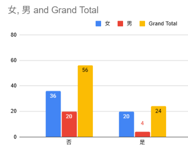
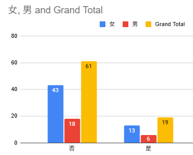
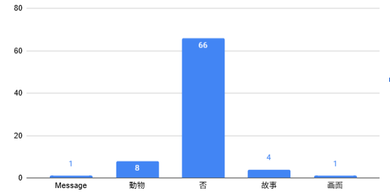
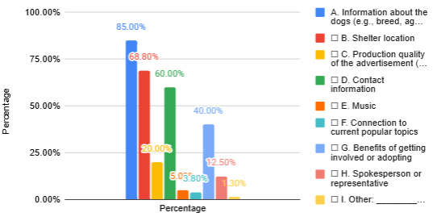

.gif) Charlize
Charlize
Data
part 1. Characteristics of the Sample
In our survey, we’ve got a total of 80 responders, and most of them are in Daan.
We’ve asked 5 Daan teachers, 10 Daan students and random strangers in the Daan
area and Ximending.
1.1 Gender
70% of all respondents were female, the other 30% were male.

1.2 Age Distribution
Most of the respondents were teenagers aged 13–17 years old (57.5%).Because of
this, the survey results mainly reflect the opinions of younger people and may not
fully represent all age groups.
.png)
Part 2
Question one
In the past two years, do you remember seeing any advertisements about animal shelters? (Please answer based on your memory. If unsure, choose the closest answer.)
☐ Yes
☐ No

In this question, I am trying to find out how many people have seen animal shelter advertisements. This helps me understand whether the advertisements are reaching the public and having an impact. The question is a single-choice question because respondents can select only one answer. It collects categorical data since the responses are grouped into different categories. A bar chart was chosen to present the data because it clearly displays the results and makes comparisons easy. The chart shows that the “No” bar is much taller than the “Yes” bar, indicating that many more respondents answered “No.” In the side-by-side chart, both boys and girls show a similar pattern, with more respondents selecting “No” than “Yes.” According to the data, “No” has the highest frequency at 70%, meaning that most respondents do not remember seeing animal shelter advertisements in the past two years. No unusual patterns or outliers were identified in the data.
Question two
If asked to describe the advertisement, would you be able to clearly explain it to someone else? (Based on your impression, decide whether you can clearly recall and describe the content.)
☐ Yes
☐ No

In this question, I am trying to find out whether the advertisements are effective. This helps me understand if the advertisements are able to catch the public's attention and encourage people to care about this topic. The question is a single-choice question because respondents can select only one answer. It collects categorical data since the responses are grouped into different categories. A bar chart was chosen because it displays the results clearly and makes it easy to compare the frequencies of each response. The X-axis shows whether people can clearly describe the advertisement content, while the Y-axis shows the number of respondents. According to the data, “No” has the highest frequency at 76.2%, indicating that most respondents could not clearly describe the content of the advertisements. This suggests that the advertisements may not have been memorable or effective enough to leave a strong impression on viewers. No unusual patterns or outliers were observed in the data.
Question three
Please briefly describe one element from the advertisement that left the strongest impression on you: (Use one or two sentences. For example: visuals, storyline, music, or a specific detail.)

In this question, I am trying to find out what kinds of advertisements attract people's attention. This helps me understand which details, designs, or features in advertisements are most noticeable to the public. The question is an open-ended question because respondents can write their own answers instead of selecting from a list of options. It collects categorical data because the responses were grouped into different categories for analysis. Since the question is open-ended, the responses were first organized into categories before the results were analyzed. A bar chart was chosen because it displays the results clearly and makes it easy to compare the frequencies of each category. The most popular category is "NONE," meaning that most respondents could not identify any specific details or designs that attracted their attention. According to the data, "NONE" has the highest frequency, with 66 out of 80 responses (82%), indicating that the majority of respondents did not notice any particular feature of the advertisements. This suggests that the advertisements may not have been memorable or visually engaging enough to capture the audience's attention. No unusual patterns or outliers were found in the data.
Question four
When you see an animal shelter advertisement, which information do you think should be emphasized the most? (Select all that apply) (You may select one or more options. If you have other ideas, please write them under “Other.”)
☐ A. Information about the dogs (e.g., breed, age, personality)
☐ B. Shelter location
☐ C. Production quality of the advertisement (visuals, editing, etc.)
☐ D. Contact information
☐ E. Music
☐ F. Connection to current popular topics
☐ G. Benefits of getting involved or adopting
☐ H. Spokesperson or representative
☐ I. Other: ________________________

The exact question asked was, "When you see an animal shelter advertisement, which information do you think should be emphasized the most?" The main purpose of this question is to find out what information people want to see in advertisements so that they will be more interested and willing to pay attention to the topic. This is a multiple-selection question because respondents can choose more than one answer. It collects categorical data since the responses are grouped into different categories. Because respondents select their answers from a list of options, A bar chart was chosen because it clearly displays the different categories and makes it easy to compare which options were selected most frequently. The results show that 85% of respondents selected "Information about the dogs," indicating that most people believe details about the dogs should be emphasized in animal shelter advertisements. In contrast, "Others" was the least selected option, chosen by only 1.25% of respondents. These findings suggest that audiences are most interested in learning about the animals themselves, while other types of information are considered less important. No unusual patterns or outliers were found in the data.